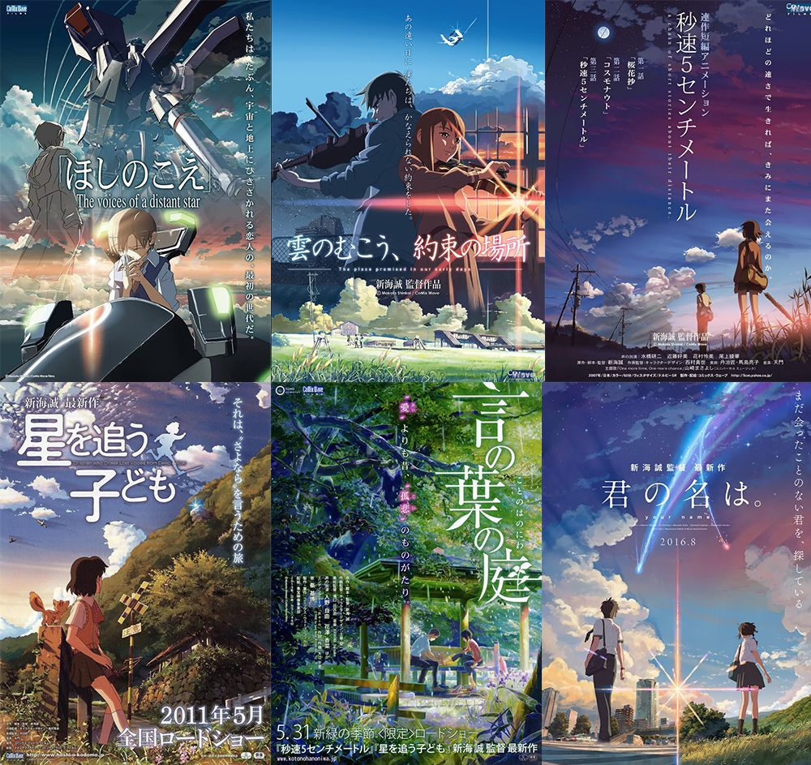
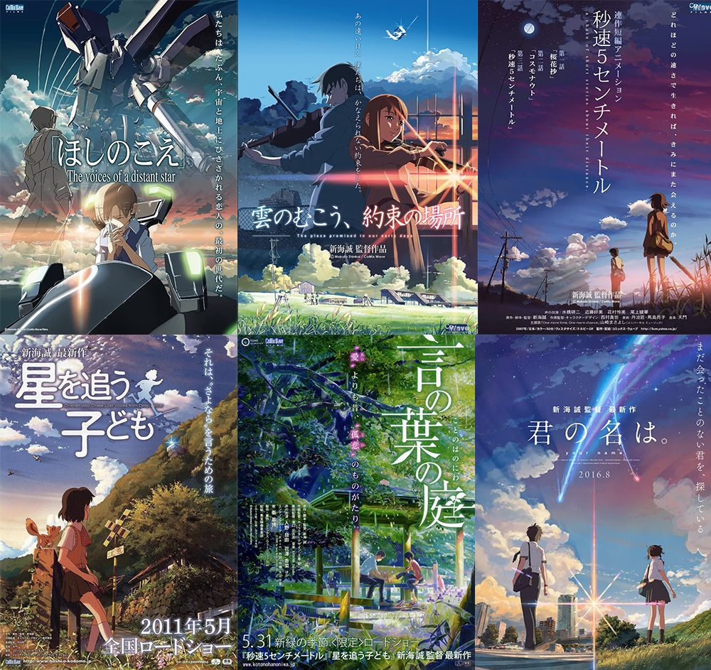

作者 新海诚 介绍
 

新海诚，1973 年 2 月 9 日出生于日本长野县南佐久郡小海町。他毕业于日本中央大学文学部，是著名的动画导演和编剧。
新海诚早期在 Falcom 游戏公司工作，期间完成了两部个人黑白短动画作品《遥远的世界》和《她和她的猫》。其中，《她和她的猫》于 2000 年由 PROJECT TEAM DoGA 主办的第 12 届 CG 动画竞赛中获得大奖，这两部作品为其确立了治愈向的基调。
2002 年，新海诚完成第一部公开上映的电影《星之声》，正式踏入动画电影制作行列。此后约每隔两到三年推出一部动画电影。2004 年，他执导了个人首部长篇科幻动画电影《云之彼端，约定的地方》，击败宫崎骏执导的《哈尔的移动城堡》拿下了第 59 届日本每日映画大奖动画奖。2007 年，爱情动画《秒速 5 厘米》上映，标志着新海诚进入主流动画导演行列，该片获亚洲太平洋电影节最佳动画长篇奖和意大利未来电影节蓝旗亚・白金大奖赛。2011 年，《追逐繁星的孩子》上映。2013 年，治愈系动画《言叶之庭》推出。2016 年，《你的名字。》票房收入创历史新高，截至 2023 年 9 月，居日本动画电影总票房第五，新海诚还获得了第 40 届日本电影学院奖最佳编剧奖及第 26 届日本电影评论家大奖最佳导演奖。2018 年，《天气之子》收获广泛好评，获得第 44 届报知电影奖最佳动画影片奖。2023 年，新海诚凭借《铃芽之旅》获第 73 届柏林电影节最佳影片提名。今年春天，《铃芽之旅》登陆中国内地，票房突破 8.07 亿元，成为中国影史日本电影票房冠军。春去冬来，新海诚带着《铃芽之旅》和同名展览重回中国。新海诚的电影以独特的创作风格和感人至深的故事情节备受赞誉，其作品常采用手绘动画的方式，通过光与影的对比和渲染打造具透视感、纵深感的场景，每一帧画面都精美细腻，给人留下深刻印象。
新海诚的出生及教育背景新海诚于 1973 年 2 月 9 日出生在日本长野县南佐久郡小海町。他从小就喜欢观察天空、云雨和阳光，在脑海中勾勒幻想世界。新海诚的父亲是家族建筑企业 “新津组” 第三代社长，但新海诚并未继承家业。他毕业于中央大学文学系国文学专业，从小受母亲影响喜欢画画，虽未展现过人天赋，但在成长过程中有一台那个年代少见的电脑。这似乎注定他虽没有传统漫画创作经历，却在动画领域走出了独特道路。
新海诚早期作品及风格新海诚早期作品有《遥远的世界》《她和她的猫》等。早期作品中，相比画面通透、细节满满的背景画面，人物显得十分突兀，面部线条僵硬，细节糟糕，表情难以传递情感，人物设计简陋。但新海诚早期作品已开始展现出他独特的风格，如《她和她的猫》以一只公猫的视角讲述与女孩的日常，风格清新，感情细腻，配乐负责人是天门，猫的配音由新海诚本人担当。
新海诚作品《星之声》成就2002 年新海诚制作第一部动画短片《星之声》。这部作品虽人物五官几乎一样，有些画面不够好看甚至丑，但优点突出。它展现了新海诚对人物情感微妙的拿捏和表现节奏的精准洗练。女主角长峰美加子参加宇宙军后与青梅竹马的男主用手机短信通信，随着距离变远，短信抵达时间变长。最终女主在宇宙孤独战斗，8 年后男主也参加舰队追寻女主而去。《星之声》获得了广泛好评，斩获了包括星云奖、日本文化厅媒体艺术祭动画部门特别奖在内的多个奖项。
新海诚《云之彼端，约定的地方》击败宫崎骏作品2004 年新海诚制作出人生中第一部长篇动画电影《云之彼端，约定的地方》。这部作品集合了新海诚所有的思想：未来、战争、科技、自然、人类、思恋等。它击败了宫崎骏的《哈尔的移动城堡》，拿下了每日电影竞赛动画电影奖，并获选为 2005 年第九届日本文部省文化厅媒体艺术祭动画部门推荐的作品。
新海诚《秒速 5 厘米》获多项大奖2007 年，新海诚执导的爱情动画《秒速 5 厘米》上映。这部作品讲述了贵树和明理从小学到长大后的故事，展现了距离对两人感情的影响。《秒速 5 厘米》标志着新海诚进入主流动画导演行列，获亚洲太平洋电影节最佳动画长篇奖和意大利未来电影节蓝旗亚・白金大奖赛等多项大奖。
新海诚《你的名字。》票房及奖项2016 年，电影《你的名字。》上映。该片以清新的画面、奇幻的剧情、真挚的情感获得无数影评人青睐，成为 2016 年日本本土影片票房冠军，并荣获第 42 届洛杉矶影评人协会奖的最佳动画奖，新海诚也凭借该片荣获日本电影评论家大奖最佳导演奖。2024 年 7 月，《你的名字。》重映票房突破 7 亿。
新海诚《天气之子》好评及奖项2019 年，《天气之子》上映。电影以天气变化混乱的时代为背景，讲述被命运操控的少年与少女的故事。在国内，以豆瓣为准评分优秀。在国外，以 MAL 为准评分也较高，排在上乘位置。《天气之子》获得日本电影学院奖最佳动画奖，其音乐制作 RADWIMPS 也凭此获得最佳音乐奖。
新海诚《铃芽之旅》成就2022 年，《铃芽之旅》首映，2023 年 3 月 24 日在中国大陆上映。该片讲述了 17 岁少女铃芽与少年草太关闭灾难之 “门” 的冒险故事。《铃芽之旅》IMAX 中国首周末劲收 2830 万，大幅刷新 IMAX 在中国市场上映的日本动画电影首周末纪录，也创下非好莱坞进口片的最佳票房成绩。2023 年 4 月，《铃芽之旅》实时票房破 5.75 亿，超越 2016 年上映的《你的名字》总票房，成为中国影史日本动画电影票房第一。
新海诚是一位极具才华的动画导演，他的作品风格独特，画面精美，情感真挚。从早期的简陋人物设计到后来的成熟作品，新海诚不断成长和进步。他的作品涵盖了爱情、奇幻、灾难等多种题材，在国内外都获得了极高的评价和票房成绩。